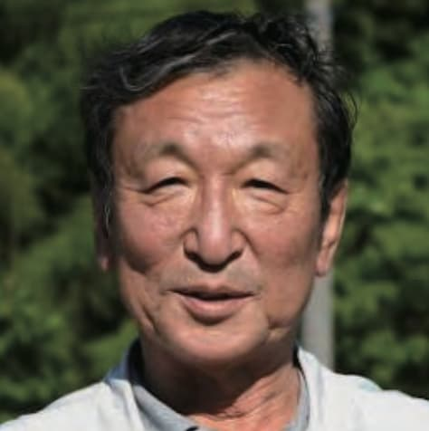
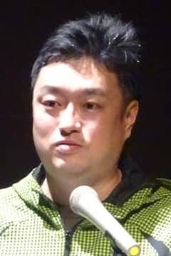
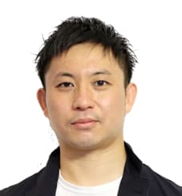

講師･パネリスト
パネリスト紹介
-

牟田 光生
父親が設立した教育研究所を引き継ぎ、現在代表を務める。
同時に黒部市サポートステーションや多機能型事業所を運営。
富山大学非常勤講師も務める。
幼少時代から、父親が向き合ってきた、不登校やひきこもりと接点があり、現在も訪問支援を通じて、多くの当事者と関わっている。 -

上田 理香
KHJ 全国ひきこもり家族会連合会本部事務局長。
家族支援士 (日本家族カウンセリング協会認定)。
KHJ認定ピアサポーター。
20代で母娘での断続的ひきこもりを経験したあと、2012 年よりKHJ本部事務局に。
翌年から家族会を対象にKHJひきこもりピアサポーター養成研修を企画実施し、インクルーシブの視点から立場を超えたピアサポ活動を推進する。
昨年はピアサポ・フェスティバルin高知を主催し「えいやんかみんなピアでえいやんか」をテーマに、家族も本人も一緒に協働する人も互いに生きやすい社会を創っていく「仲間」として集い発信した。
各地の講演会では、家族が孤立しない 家族支援の重要性を伝えている。
2019年より東京都ひきこもりに係る支援協議会委員を務める。
共著に『ひきこもり大学』 (潮出版) -
 川又 直
昭和62年、富山市郊外の農村地帯で自立支援施設「PeacefulHouse はぐれ雲」を設立。
以来長年にわたり、不登校やひきこもり、非行といった様々な問題を抱えた児童や若者たちと共同生活を行う。
農作業を通じた生活習慣の習得による社会的自立のための支援活動を続け、これまで社会に400名以上を送り出している。 -
 宮田 隼
学校に馴染めない子どもや、ひきこもり、路上生活を余儀なくされた人、職場の人間関係に悩む大人など、居場所のない人たちに1日300円で誰でも利用できる、富山県高岡市にある一軒家で『コミュニティハウスひとのま』を提供。
各種セミナーやイベントの企画、若者支援も同時に行っている。 -

松居 和世
2009年から自立支援共同生活寮で若者の自立支援に携わり、これまで県内2か所の地域若者サポートステーションでキャリアコンサルタントや総括コーディネーターとして若者や就職困難な世代の職業的自立支援を行う。
非常勤講師として2つの高校でキャリアデザインのセミナーや就職指導を行い、児童養護施設や高校で居場所作りも行っている。 -
 山田 邦生
静岡県出身、名古屋工業大学大学院卒。
株式会社MS-Japanを経て、2016年に株式会社MetaAnchor設立。
前職では、転職エージェントとして100人の転職支援をする。
Meta Anchor創業から適性検査事業を展開し現在も法人向けに提供。
知人がひきこもり状態になったのをきっかけに、ひきこもり当事者を対象にしたオンラインプラットフォーム「COMOLY」を開始。